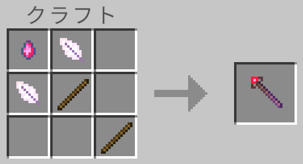

【レシピの作り方】
はじめに
カスタムレシピはこの環境内で使っているオリジナルアイテムの取得手段の一つとして利用しています。
ここでは本環境内で実装しているオリジナルアイテムを例に挙げてカスタムレシピの作り方をご紹介します。
※ルートテーブルと同じくカスタムレシピでもJSON形式で記載しますのでJSONの仕様を理解している前提で話を進めます。
ここでは本環境内で実装しているオリジナルアイテムを例に挙げてカスタムレシピの作り方をご紹介します。
※ルートテーブルと同じくカスタムレシピでもJSON形式で記載しますのでJSONの仕様を理解している前提で話を進めます。
定義ファイルの所在
ビヘイビアパックのルートディレクトリ直下にある
例えばバニラのビヘイビアパックの場合は以下の構成になっています。
レシピを定義しているディレクトリ
この中に大量の定義ファイルが格納されています。
これに対して本環境の構成は以下の通り。
本環境のビヘイビアパック内の定義ファイル
ご覧のように本環境での定義ファイルは上記の２つのみです。
これらのファイルはどちらも「不動の杖」のレシピを定義したものですが、これ以外の定義ファイルはバニラのデータがデフォルトとして自動的に適用されるので気にする必要はありません。
recipesというディレクトリ内で定義します。例えばバニラのビヘイビアパックの場合は以下の構成になっています。
レシピを定義しているディレクトリ
/<ビヘイビアパックのルート>
/recipes
この中に大量の定義ファイルが格納されています。
これに対して本環境の構成は以下の通り。
本環境のビヘイビアパック内の定義ファイル
/for-family
/recipes
immovable_rod_symmetry.json 「不動の杖」の左右対象レシピを定義しているファイル
immovable_rod.json 「不動の杖」の単体レシピを定義しているファイル
ご覧のように本環境での定義ファイルは上記の２つのみです。
これらのファイルはどちらも「不動の杖」のレシピを定義したものですが、これ以外の定義ファイルはバニラのデータがデフォルトとして自動的に適用されるので気にする必要はありません。
レシピの内容
材料
今回レシピに使用している材料は以下の２点と木の棒です。▼不動の魔石（customize:immovable_stone）
▼浮遊の羽（customize:floating_feather）
レシピパターン
「不動の杖」のレシピは以下の３パターンで定義しています。▼パターン①（immovable_rod.json）

▼パターン②（immovable_rod_symmetry.json）

▼パターン③（immovable_rod_symmetry.json）

ファイルの内容
単体レシピ
immovable_rod.json
{
"format_version": "1.20.10",
"minecraft:recipe_shaped": {
"description": {
"identifier": "minecraft:immovable_rod"
},
"tags": [ "crafting_table" ],
"assume_symmetry": false,
"priority": 1,
"pattern": [
"YXY",
" #",
" #"
],
"key": {
"#": {
"item": "minecraft:stick"
},
"X": {
"item": "customize:immovable_stone"
},
"Y": {
"item": "customize:floating_feather"
}
},
"unlock": [
{
"context": "AlwaysUnlocked"
}
],
"result": {
"item": "customize:immovable_rod"
}
}
}
左右対象レシピ
immovable_rod_symmetry.json
{
"format_version": "1.20.10",
"minecraft:recipe_shaped": {
"description": {
"identifier": "customize:immovable_rod_symmetry"
},
"tags": [ "crafting_table" ],
"assume_symmetry": true,
"priority": 1,
"pattern": [
"XY",
"Y#",
" #"
],
"key": {
"#": {
"item": "minecraft:stick"
},
"X": {
"item": "customize:immovable_stone"
},
"Y": {
"item": "customize:floating_feather"
}
},
"unlock": [
{
"context": "AlwaysUnlocked"
}
],
"result": {
"item": "customize:immovable_rod"
}
}
}
定義項目
レシピには大きく分けると以下の４種類があります。
形状レシピで使っているパラメータは以下の通りです。
※マインクラフトのバージョン
※カスタムアイテムの場合、アイテム名の前には必ずネームスペース（今回の場合は”customize”）を付けるようにしましょう。
数字の小さい方が優先度が高くなり、優先度が最も高い定義ファイルが適用されます。
但しそれはdescriptionパラメータの
単体レシピ（immovable_rod.json）と左右対称レシピ（immovable_rod_symmetry.json）とでは、それぞれで異なる識別子を指定しているので複数のパターンを共存させています。
慣習的に木材素材の場合は"#"が使われているようなので、今回もそれに倣って指定しています。
キーに指定する文字については、スペース文字以外であれば基本的に何を指定しても問題ないようです。
一般的には
- 炉のレシピ（minecraft:recipe_furnace）
- 形状レシピ（minecraft:recipe_shaped）
- 醸造レシピ（minecraft:recipe_brewing_container）
- 鍛冶レシピ（minecraft:recipe_smithing_transform）
形状レシピで使っているパラメータは以下の通りです。
※マインクラフトのバージョン
1.21.23時点のformat_versionの現在の最新は1.20.10です。※カスタムアイテムの場合、アイテム名の前には必ずネームスペース（今回の場合は”customize”）を付けるようにしましょう。
description
- ・identifier
- レシピの識別子を指定します。基本的に任意の文字列が指定可能でpriorityパラメータと連動します。
tags
今回は作業台を使うのでcrafting_tableを指定しています。assume_symmetry
- ・左右対称で使う場合
- trueを指定します。
- ・patternパラメータに定義したパターンのみ使う場合
- falseを指定します。
priority
同じアイテムのレシピが複数ファイルある場合、優先順を決める整数を指定します。数字の小さい方が優先度が高くなり、優先度が最も高い定義ファイルが適用されます。
但しそれはdescriptionパラメータの
identifierが同じ場合に適用されるルールなので、その識別子が異なる場合はその限りではありません。単体レシピ（immovable_rod.json）と左右対称レシピ（immovable_rod_symmetry.json）とでは、それぞれで異なる識別子を指定しているので複数のパターンを共存させています。
pattern
keyパラメータで設定されているキーを使ってクラフト時の素材の配置パターンを指定します。慣習的に木材素材の場合は"#"が使われているようなので、今回もそれに倣って指定しています。
key
patternパラメータで使用するためのキーと素材アイテム名をペアにした定義を指定します。キーに指定する文字については、スペース文字以外であれば基本的に何を指定しても問題ないようです。
unlock
ここにはロックされているレシピを解除する条件を指定します。一般的には
itemというキーと共にロックの解除条件となるアイテム名を指定するようですが、今回はcontextというキーにAlwaysUnlockedを指定する事で常に解除された状態にしています。result
クラフトの結果取得できるアイテム名をitemというキーと共に指定します。